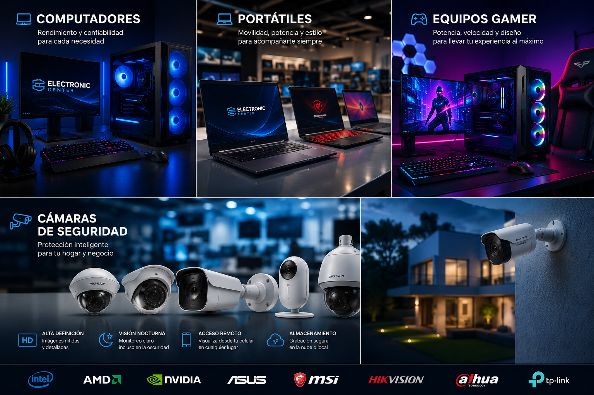

◉
Experiencia
Años de conocimiento técnico aplicados a problemas reales y soluciones prácticas.
Tecnología profesional, explicada de forma sencilla. Reparación, computación, gaming, videovigilancia, redes y telecomunicaciones.

Queremos que el cliente entienda lo que ocurre, conozca sus opciones y pueda tomar una decisión con confianza.
Años de conocimiento técnico aplicados a problemas reales y soluciones prácticas.
Diagnóstico primero, explicación después y autorización del cliente antes de reparar.
Buscamos tecnología actual y construimos desde hoy la base para el futuro.
Venta, reparación, mantenimiento, upgrades y soporte.
Equipos personalizados, ensamblados, componentes y mantenimiento.
Venta, instalación, cableado, programación y mantenimiento.
Routers, módems, switches, instalación y reparación.
Antenas, radios y repetidores.
Infraestructura, soporte y soluciones tecnológicas.
Diagnóstico, mantenimiento preventivo y correctivo.
Un proceso claro, sencillo y transparente.
San Antonio del Táchira, Ureña, Rubio, Capacho, San Cristóbal, Cúcuta y alrededores.
La visión de Electronic Center comienza con la tienda física y crece hacia tienda online, soporte remoto, un equipo técnico y soluciones con inteligencia artificial.
Cuéntanos qué necesitas y te ayudamos a encontrar la mejor solución.